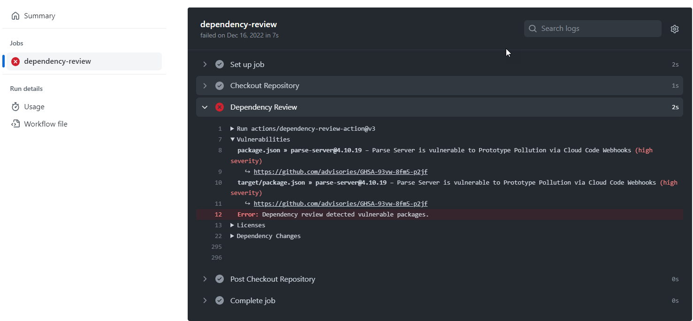

Dependency review lets you catch insecure dependencies before you introduce them to your environment, and provides information on license, dependents, and age of dependencies.
Dependency review helps you understand dependency changes and the security impact of these changes at every pull request. It provides an easily understandable visualization of dependency changes with a rich diff on the "Files Changed" tab of a pull request. Dependency review informs you of:
For pull requests that contain changes to package manifests or lock files, you can display a dependency review to see what has changed. The dependency review includes details of changes to indirect dependencies in lock files, and it tells you if any of the added or updated dependencies contain known vulnerabilities.
Note
The "dependency review action" refers to the specific action that can report on differences in a pull request within the GitHub Actions context, and add enforcement mechanisms to the GitHub Actions workflow. For more information, see The dependency review action later in this article.
Sometimes you might just want to update the version of one dependency in a manifest and generate a pull request. However, if the updated version of this direct dependency also has updated dependencies, your pull request may have more changes than you expected. The dependency review for each manifest and lock file provides an easy way to see what has changed, and whether any of the new dependency versions contain known vulnerabilities.
By checking the dependency reviews in a pull request, and changing any dependencies that are flagged as vulnerable, you can avoid vulnerabilities being added to your project. For more information about how dependency review works, see Reviewing dependency changes in a pull request.
Dependabot alerts will find vulnerabilities that are already in your dependencies, but it's much better to avoid introducing potential problems than to fix problems at a later date. For more information about Dependabot alerts, see About Dependabot alerts.
Dependency review supports the same languages and package management ecosystems as the dependency graph. For more information, see Dependency graph supported package ecosystems.
For more information on supply chain features available on GitHub, see About supply chain security.
The dependency review feature becomes available when you enable the dependency graph. For more information, see Enabling the dependency graph."
The "dependency review action" refers to the specific action that can report on differences in a pull request within the GitHub Actions context. See dependency-review-action. You can use the dependency review action in your repository to enforce dependency reviews on your pull requests. The action scans for vulnerable versions of dependencies introduced by package version changes in pull requests, and warns you about the associated security vulnerabilities. This gives you better visibility of what's changing in a pull request, and helps prevent vulnerabilities being added to your repository.

By default, the dependency review action check will fail if it discovers any vulnerable packages. A failed check blocks a pull request from being merged when the repository owner requires the dependency review check to pass. For more information, see About protected branches.
The action is available for all public repositories, as well as private repositories that have GitHub Code Security or GitHub Advanced Security enabled.
Organization owners can roll out dependency review at scale by enforcing the use of the dependency review action across repositories in the organization. This involves the use of repository rulesets for which you'll set the dependency review action as a required workflow, which means that pull requests can only be merged once the workflow passes all the required checks. For more information, see Enforcing dependency review across an organization.
The action uses the dependency review REST API to get the diff of dependency changes between the base commit and head commit. You can use the dependency review API to get the diff of dependency changes, including vulnerability data, between any two commits on a repository. For more information, see REST API endpoints for dependency review. The action also considers dependencies submitted via the dependency submission API. For more information about the dependency submission API, see Using the dependency submission API.
Note
The dependency review API and the dependency submission API work together. This means that the dependency review API will include dependencies submitted via the dependency submission API.
You can configure the dependency review action to better suit your needs. For example, you can specify the severity level that will make the action fail, or set an allow or deny list for licenses to scan. For more information, see Configuring the dependency review action.
The dependency review API and the dependency review action both work by comparing dependency changes in a pull request with the state of your dependencies in the head commit of your target branch.
If your repository only depends on statically defined dependencies in one of GitHub’s supported ecosystems, the dependency review API and the dependency review action work consistently.
However, you may want your dependencies to be scanned during a build and then uploaded to the dependency submission API. In this case, there are some best practices you should follow to ensure that you don’t introduce a race condition when running the processes for the dependency review API and the dependency submission API, since it could result in missing data.
The best practices you should take will depend on whether you use GitHub Actions to access the dependency submission API and the dependency review API, or whether you use direct API access.
If you use GitHub Actions to access the dependency submission API or the dependency review API:
retry-on-snapshot-warnings to true.retry-on-snapshot-warnings-timeout to slightly exceed the typical run time (in seconds) of your longest-running dependency submission action.If you don’t use GitHub Actions, and your code relies on direct access to the dependency submission API and the dependency review API:
x-github-dependency-graph-snapshot-warnings header (as a base64-encoded string). Therefore, if the header is non-empty, you should consider retrying.